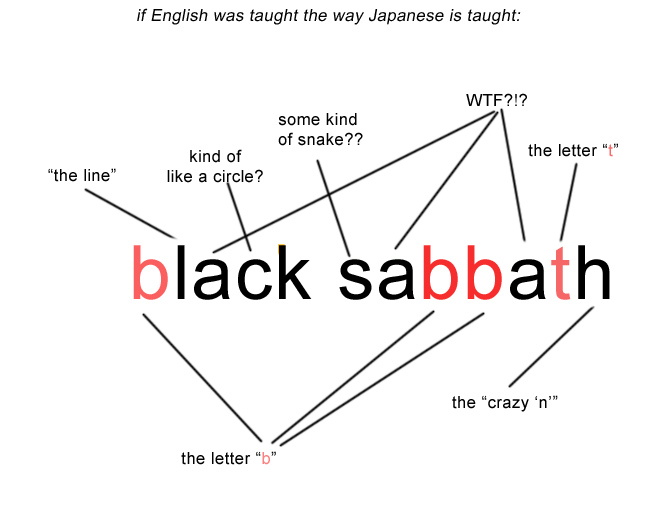
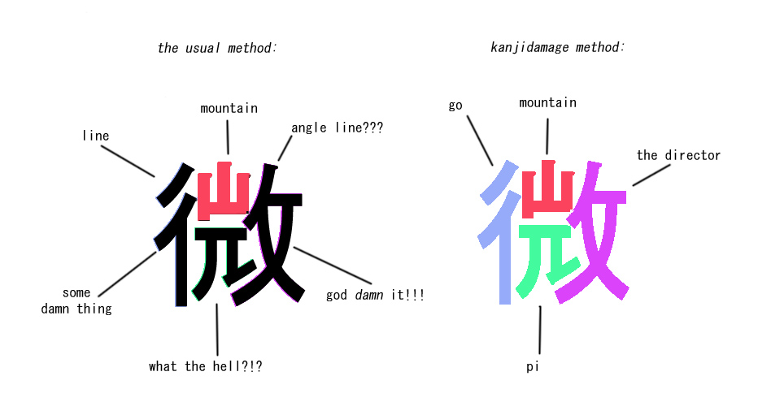
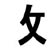

Bushu (部首) are the smallest units (we call them "radicals"). They are like letters of the alphabet, but there's over 200 of them. Just like English letters, radicals don't have any real meaning. And again, just like English, radicals are combined in largely random combinations to make kanji.
Kanji (漢字) are single words, made of radicals. There's over 5,000 of them, but most of them are only used in people's names. You only need to know around 2,000 to read a newspaper.
Jukugo (熟語) are compound words: Just like English, several kanji compose a jukugo. (think of the English words like "butt pirate", "can opener," "douche bag" or "hat rack"). Once you learned enough kanji, you can comprehend Jukugo almost without trying.
I'll go on about these 3 in unrelenting detail later. For now, let's deal with...
Guys like  ,
,  , and
, and  are what I call ABSOLUTE radicals. They are never kanji on their own, only building blocks. They don't have any pronunciations, and they don't have any meaning.
are what I call ABSOLUTE radicals. They are never kanji on their own, only building blocks. They don't have any pronunciations, and they don't have any meaning.
...are like the ABSOLUTE RADICALS (no pronunciation, never kanji by themselves), except that they DO HAVE MEANING. For example  is associated with sickness. It is used in maybe 10 kanji, and all those kanji have to do with sickness. For instance, 痛(hurts), 病 (sick), 疲 (get tired), 痢 (diarrhea), 症 (symptom), and so on.
If you're like me and often forget the meaning of a kanji, these SYMBOLIC RADICALS can help you guess.
is associated with sickness. It is used in maybe 10 kanji, and all those kanji have to do with sickness. For instance, 痛(hurts), 病 (sick), 疲 (get tired), 痢 (diarrhea), 症 (symptom), and so on.
If you're like me and often forget the meaning of a kanji, these SYMBOLIC RADICALS can help you guess.
Here's the mind-blower: All kanji, even complex ones, can be radicals- if they wind up inside a bigger kanji! For instance, 監 (director). You'd think 監 would be big enough by itself, since it is made out of 3 smaller radicals, but the whole damn thing winds up inside 鑑 (expert opinion).
A more common example would be the kanji for water and tree (水 and 木). These are both legitimate words, with their own pronunciation and meaning, but they become radicals when you stuff 'em inside bigger kanji: 様, 泳, 森, 杢, or 材.
Often, these simple-kanji-which-are-used-in-bigger-kanji are ALSO symbolic radicals - kanji with a tree in them have to do with wooden things, kanji with fire in them are about fire, etc.
MYTH #1: RADICALS ALWAYS MEAN SOMETHING.
MYTH #2: KANJI LOOK LIKE THE THINGS THEY DESCRIBE.
Remember what I said earlier about "half the difficulty of Japanese is how it is taught?" This is a perfect example.
Students always say, "Why does 'wind' (風) have 'insect' (虫) in it? Why does 'muscle' (筋) have 'bamboo' (竹) in it? Why does god damn sake (酒) have 'west' (西) in it?"
Before you curse Japanese for being "all crazy and shit," ask yourself, what if some ESL guy pointed at the word "fire" and asked you, "What does "r" mean? What does "e" mean?"
"It means .... it , uh.... it...."
Then he points to the word fighter and asks you, "Why is the "r" at the end? Why isn't it in the beginning?"
"Because - because mind your own business is why!!!"
See, it hurts your head to even think about questions like that in English ... and yet when it comes to Japanese, gaijin students can spend years asking nothing BUT those types of questions. I know I did.
This is not a "Japanese is crazy" problem. Nor is it a "noobs are dumb" problem. This is a problem because Japanese teachers and textbooks suck. Most new students are led to believe that radicals have meaning, and that kanji look like the things they describe. That's not merely wrong, it makes kanji feel very foreign and illogical, when in fact kanji is basically structured the same as English!!
Check it out:
radicals = letters
words = kanji
jukugo = compound words
Radicals don't have meaning any more than the letter "F" or "G" does! That's why it makes your head hurt if some ESL guy asks you, "What does the "f" in "fighter" mean?"
On the other hand, if that same ESL guy asks, "What does "fire" mean? What does "fighter" mean?" In that case, it's easy for you to answer. Not only that, but once he knows what "fire" and "fighter" mean, he can easily guess by himself what a "fire-fighter" is - he doesn't even need to ask!
And, the good news is that kanji is just the same: Jukugo (compound words) basically shriek their meaning at you. If you learn 1,000 kanji, you AUTOMATICALLY learn how to read 2,000 jukugo for free.
Here's what a teacher should tell you on Day One of class:
DON'T ask 'what does this radical inside a kanji mean?'
DO ask 'what does this kanji inside a jukugo mean?'
Think about it like this: if kanji really DID look like the things that they describe, you'd have to memorize 2,000 complicated drawings that had nothing in common with each other. But with radicals, all you got to do is learn around 200 simple shapes and you can draw and read almost all kanji - which was exactly the intention of kanji's inventors.
I will try to explain this with A HISTORICAL TANGENT:
In the beginning, Chinese dudes wrote pictographs - pictures that looked like the things they represented. The drawback was that writing a paragraph took as much time as drawing a comic book, because IT WAS drawing a comic book! So they (Who? Sages, motherfucker, sages! Who else?) simplified the pictographs into what we now call Kanji. How?
Step one: They chose 200 or so RADICALS as their building blocks.
Step 2:
Any pictograph that was too hard, they said, "OK, what radical does the top part most closely resemble? Swap 'em! What radical does the left part most closely resemble? Swap 'em!" and so on.
For example, the old, complicated kanji for country is 國. And the current kanji for country is 国.
Now, from the foreigner's point of view, this change is retarded in two ways.
1) the radical that was swapped into the center of the new version means " jewel." (a jewel in a box? What does that have to do with a country?)
2 ) the simplified 国 looks almost the same as the kanji for treasure; 宝 (more confusion!).
But try looking at it from the point of view of the sages: they didn't have computers, they got bad arthritis, and they had to draw these crazy hard pictographs all damn day. So one of the sages, in his wisdom, said, "OK, fuck this! Can't we swap the center bit for a simpler radical?" And the other sage replied, "Dood, if you drink enough sake, the center bit looks kind of like 玉."
And the first sage was like, "Man you are just high as hell, but it's late and I got mad poems to write about seasons and shit, so yeah, let's just say 國 is now officially 国 and call it a day."
So that is how that went down.
So, the bad news is that the kanji for 'country' (国) has nothing to do with the meaning of balls (玉 ), nor the meaning of box (口).
The good news is that IT DOESN'T MATTER.
What matters is that, thanks to the existence of radicals, you have an alphabet now, instead of 2,000 unrelated pictures of things. Just like English, you can 'read' individual kanji like 国 the same way that reading the letters 'c','o', 'u', 'n', 't', 'r', and 'y' allow you to read the word 'country' - in fact, kanji is simpler, because you only had to learn two radicals instead of seven letters!
Put another way, if you know the 'balls' and 'box' radicals, you can easily make a mnemonic to help you remember the kanji for country: "A country is a big box where the citizens keep all their balls." Then you can chuckle because you just said "balls."
"But Schultzzz," you ask: "If radicals don't have meanings, why do you give them names like 'box' and 'balls' ? Why do you need mnemonics at all?" First, those are not meanings, they're arbitrary keywords. And second, English has mnemonics too, to help you spell. For example, "I before E except after C, or if your daddy's GAY with the NEIGHBOR from around the WAY."
Check out these two groups of kanji:
Group ONE: (complex kanji)
履 歯 紫 顔 僕 鼻
Group TWO: (simple kanji)
丹 屯 斤 杉 后
Which do you think are college-level words? And which are simple kid-words?
ANSWER:
Group one:
Group two:
....THE TERRIBLE SECRET IS:
THERE IS ALMOST NO CONNECTION BETWEEN HOW USEFUL A KANJI IS AND HOW COMPLEX IT IS!
Put another way : kanji with easy meanings are often hard to learn, and kanji with obscure meanings can be really simple to learn, but you'll never use them. Here's why this is important:
If you're teaching a normal language, like German (or even a pretty illogical language like English), you'll start with "kid words" and then work up to "adult words." But if you try teaching kanji that way, you'll start new students off with hellaciously complex kanji, and then 3 years later, you teach them simple kanji. Dumb! To add insult to injury.. ..after the hapless students bust ass learning common-but-complex kanji like 館 and 裂 ... a year later, they'll learn less-used kanji like 官 and 列 ... WHICH ARE COMPONENTS OF 館 and 裂! And the students will say, "DAMN! Why didn't you teach me 官 and 列 first!?! Then learning 館 and 裂 would have been easy!" (even worse... this is how Japanese teach their own children. WTF?!? And the gaijin teachers copied this method?!?!?)
That's why nowadays, people generally agree that gaijin learn kanji best if they learn 'em from simplest-to-most-complex.
The simple-to-complex method might seem like a waste of time when you are learning words like 竹 (bamboo) and complex abstractions like 云 (meaning variously, 'et cetra', 'vague', or an obsolete form of 'to say'). You might grumble, "Dude, I don't yell out "Bamboo!!" on a daily basis, why do I need this?" But in fact, in Japan you need the bamboo radical in order to say box " (箱) " or even laugh "(笑)! " And you need 云 to say childish-meaning-yet-complex-shape kanji like cloud (雲). Learning 云 beforehand makes learning 雲 way more doable.
Here is an example of how useful radicals are:
露 ('outdoors')!!!
It looks like a huge, messy pile of chicken scratch, doesn't it? It is a 21 stroke character .Trying to memorize where to put each of the 21 strokes is a huge depressing pain, and then trying to memorize each individual stroke for ALL 2000 KANJI makes you even more depressed, until you just wish Flanders was dead.
BUT, if you have been learning radicals, instead of 21 random chicken scratches, you see only 3 parts: rain 雨 , foot 足 , and each 各. These three radicals are combined into the one character for outdoor (露). Not only that, if you have learned those 3 radicals, you can use them to help figure out dozens of other kanji too! For example, 雨 ALSO makes 雲 霜 雪 雷. And 足 ALSO makes 踊 路 踏; 各 ALSO makes 客 落 格, and so on.
In other words, radicals are the ABCs of kanji. If this seems like a "DUHHH" statement to you, then guess what? You're way smarter than most textbook publishers or teachers!
Because, I ain 't seen even ONE JAPANESE TEXTBOOK YET that actually uses radicals like ABCs.
They'll teach you like the one radical in the upper-left corner of the kanji and then say, "OK you're on your own, Hoss!" That's like trying to teach some ESL kid how to read the phrase "Black Sabbath" by telling her "OK, you got your 't' ...and , uh, a little while later there's an 'a' and oops gotta go, BTW learn that and 10 more words by tomorrow KTHXBYE!"
For some reason (perhaps because they imported kanji from China), Japanese are only conscious of maybe 10% of the radicals they're using. For example: if you show the kanji for warm (暖) to your Japanese friends, they might insist it has only one radical: sun (日). So what is the other 90% of it?? 9 random chicken-scratch lines? This despite the fact that the upper-right part appears in exactly the same shape and position in over 10 other kanji (受, 浮, 隠, 授, 妥, 採, etc. ). What is that, some kind of wacky coincidence??? And the lower right part appears in even more kanji: 友, 緩, 抜, 援.
""Oh, but  and 友 are not radicals!" Whatever, kid. Have fun spelling 'Black Sabbath'
and 友 are not radicals!" Whatever, kid. Have fun spelling 'Black Sabbath'
Here's what English would look like if it was taught the way Japanese is taught:

For a complete list of all the radicals I use, please check the 'radicals in order' appendix.
ANOTHER HISTORICAL TANGENT:
Back in the days of books, if you wanted to look up a kanji in a dictionary, you couldn't type the hiragana into your iphone and wait for the kanji to pop up. You had to try to comb through an actual paper book packed with over 5,000 kanji - without using abcs OR hiragana! Dictionaries were organized by "the main radical." In other words, some damn sage looked at every kanji and arbitrarily decided, "This part is the main radical," and then "alphabetized" all the kanji based on that. So instead of being structured like a, b, c, d, etc. The dictionaries were structured like, " main radical =water(水) ", "main radical = fire(火) ", "main radical = earth(土) ", etc.
Long story short, as long as you knew one radical per kanji, (the so-called "main one"), then you were capable of looking shit up, and that's why you never learned any of other radicals. Great for dictionaries, but lousy for memorizing kanji.
And you know who is even weirder than Japanese? Stupid effing foreigners!! Because every foreign kanji book I have read copies the Japanese method. All "I had to learn it the hard way, so should you!" style.
So I arbitrarily decided, if the exact same pattern of lines is used in three or more kanji, it's a damn radical, and I made up a name for it, and listed it in my kanji dictionary right next to the "real" kanji.
In other words, in my system, not only does every part of 暖 have a name, but by the time we get to 暖, you will already have LEARNED all the parts, and so learning 暖 will be easy! Let me break it down further:
First you learn 'day' (日), a real kanji.
Then you learn 'nest' ( ) an 'absolute radical', with no meaning.
) an 'absolute radical', with no meaning.
Then you learn 'friend' (友) (another real kanji), and combine it with 'nest' to make the 'crow' ( ) radical.
) radical.
(mnemonic: the crows are friends, so they live in the same nest).
Finally, you put day (日) and crow ( ) together and you have warm: 暖かい.
) together and you have warm: 暖かい.
And to make sure you remember how to 'spell' 暖, you say, "The crows get warm in the sun." - QED.
And you know what? It turns out that I'm not a TOTAL crackpot; professional linguists have been aware of these 'un-named' radicals for years, and always use them when studying Japanese (they call them 'graphemes'). But for some reason, this knowledge stayed in the ivory tower and the average Japanese teacher never found out about it. (If you want to explode your brain, go download this pdf and go to page 147)
"But Schultzzz, doesn't that mean you're giving me even more crap to learn? What makes you think I have the time?"
OK, good question.
I used to think that, too! It took me a long time to realize that, rather than saving time by skipping the radicals, I was actually WASTING my time, and here's why:
Each radical only requires you to learn 3 or 4 lines at a time - AND those 3 or 4 lines are used in dozens of kanji. If you want to learn kanji, you'll be learning those shapes ANYWAY - wouldn't it be easier to learn them once, instead of dozens of times?
Let's sum up what we've learned so far this chapter:

In KANJIDAMAGE, every part has a name! And every kanji can be assembled like a math equation, hella rationally:
行 (go) + 山 (mountain) + 元 (pi) + >(director) = 微
AND then all the radicals are tied up in a mnemonic to help you remember:
The director makes you go the mountain and get a TEENY WEENY LITTLE SLICE OF PIE.
Besides radicals, each kanji has hella ATTRIBUTES. Here they are:
STROKE ORDER: Psyche! I don't care about this even a little bit.
KUN-YOMI: the way the kanji is pronounced by itself, for instance, the KUNyomi of 酒 is "SAKE" and the KUNyomi of 水 is MIZU.
ON-YOMI: the, er, "Chinese" pronunciation of the kanji, which is only used when the kanji is combined with another kanji to form a compound word. For instance, the ON-yomi of 酒 is "SHU", so drunk-driving (飲酒運転) is pronounced in-SHU-un-ten.
(ON-yomi are about as 'Chinese' as Chop Suey and the phrase "Wing Wong," but I digress).
Unlike other teachers, I teach the ONyomi as just another radical - albeit a radical that you hear, rather than see. Here's why : A kanji may have 4 or 5 KUNyomi, and it may be part of dozens and dozens of jukugo, but it will only have one bottom-radical, only one left-side radical, only one top-radical, and they only have one ONyomi. Mostly. Furthermore, there may be 100 other kanji with the same onyomi, the same way there are a hundred kanji with a water (水) or tree (木) radical. So that's why it makes more sense to consider ONyomi as a kind of radical.
In practice, this means that:
1) like the written radicals, I give every ONyomi its own English keyword (for instance, the SHU of 酒 is "See Her Underwear," and all the other kanji pronounced SHU have the same keyword....just like all the kanji with the 水 radical have "water" as the keyword for that radical.)
2) the mnemonics always include ONyomi along with the written radicals, so you learn all of them at the same time.
For a list of all the ONyomi I use, and their corresponding keywords, please check the ONyomi appendix.
A lot of textbooks and flashcards list 2 ONyomi or even 3 ONyomi per kanji! But usually the kanji in question uses onyomi #1 90% of the time, and only uses onyomi #2 with one specific jukugo. So, fuck it!! Erase that shit! Like I said before, I cheat!
OK! Kanji have two pronunciations, the KUN and ON. But why? This simple question requires yet...
.... ANOTHER HISTORICAL-CONTEXT RANT:
When the Japanese, um, borrowed kanji from China, they got it wrong. There's no other way to say it. According to Google, the shit came over in the 5th century, because Japanese traders needed to communicate with their Korean and Chinese counterparts. For every existing Japanese word (what we today call the 'KUNyomi' word), they tried to find the corresponding Chinese kanji, and pair them up. Furthermore, they decided to use the Chinese pronunciation of the words, too, but got it wrong ... It's kind of like Canada: everyone in Canada has to learn Quebeqois French, even though real French can't understand Quebeqois-French! Anyway, the decision to force the square peg of Chinese characters in the round hole of the existing Japanese language leads to some really janky situations!
JANKY SITUATION 1: 150 words all having the same ON-yomi.
Whichever seafaring trader decided to import kanji to Japan obviously couldn't speak Chinese! Duh - Chinese has tones, and Japanese doesn't. The Japanese trader was like, "It all sounds the same - KOU, SHOU, wing, wong, whatever. So let's import something we don't understand!"
And the Japanese land-lubbers for some reason were heard to reply, "Here is a whole new vocabulary that adds nothing to our existing language, and which can't be understood by Chinese either! OK, we'll learn it, but only if we can keep our existing language, so now we have to learn twice as many words for shit we already knew how to say!"
And the seafaring traders were like, "OK deal."
And then, "Hey! Someone's trying to be Catholic over there!"
"That's over the line - let's massacre the whole village!"
That is how Japanese multiculturalism went, back in the day.
JANKY SITUATION 2: Kanji which have two (or more!) ONyomi.
China has hella different dialects. So one Japanese trader would come back from Shanghai, where they pronounce 青い (blue) as SEI, and he'd teach everyone in his town to say SEI. Meanwhile, another Japanese trader would come back from Hong Kong, where they pronounce 青い as SHOU, and he'd teach everyone in HIS town to say SHOU. So there's that.
JANKY SITUATION 3: Duplicate kanji.
Even after assigning each Japanese word to a kanji, they still had hella kanji left over. So they took native Japanese words (KUNYOMI, remember) with 2 or 3 nuances and ASSIGNED EACH NUANCE TO A DIFFERENT KANJI, WHILE KEEPING THE KUNYOMI THE SAME. The most infamous examples are the 3 katais (硬い, 固い, and 堅い), the 3 hakarus(計る, 図る, and 測る) , and the 3 tsutomerus(勤める, 努める, and 務める).
As if that were not pernicious enough, they frequently picked kanji which looked as similar as their meanings:
激 - intense 極 - extreme
摸 - pattern 模 - model
傾 - incline 偏 - lean or be predisposed to
Another example: to freeze is こおる, and frost/ice is こおり - both clearly came from the same Japanese word. But when they were picking Kanji to assign to the Japanese words, こおる became 凍る and こおり became 氷. So now you have to learn twice as many kanji, PLUS you STILL have to learn the original Japanese words (koori and kooru) in order to PRONOUNCE them. So nothing was achieved!
Can you believe that shit???
Beginner students have been known to weep openly in class when the teacher tries to explain about this.
HOWEVER, THERE IS GOOD NEWS: Despite all the jankiness, it's pretty simple to tell when to use the KUNyomi and when to use the ONyomi:
WORDS WHICH CONTAIN ONLY ONE KANJI (i.e. 水, 日, 大きい, 辛い) use the KUNyomi.
PROPER NOUNS use the KUNyomi ...usually. (田中 is Tanaka, 裏山 is Urayama, etc.)
JUKUGO (compound words i.e. 種類, 漢字, 哲学, etc.) use the ONyomi.
HOWEVER ...jukugo which have hiragana in 'em (i.e. 手取り早い, 人当たり, あざ笑う) use the KUNyomi, not ONyomi.
The Japanese have a word for these hiragana letters that dangle off of the ends of jukugo: OKURIGANA (literally, 'letters which are sent out from the kanji') . Please learn this word.
For instance, when I started studying, I didn't learn ON yomis for the whole first year, which caused catastrophic problems for me when it was test time. The fuckin' teachers, they never came out and said in plain English, "You need ON-yomi for compound words!!" I figured the ONyomi was some optional, formal thing, like sonkeigo, stroke order, or flower arrangement.
Anyway.
Just to make things clearer, here's a chart, showing various flavors of kanji words:
| KANJI BY ITSELF (uses KUNyomi) | kanji WITH OKURIGANA (uses KUNyomi) |
|---|---|
|
猫(cat) 雲(cloud) 尻(butt) |
大きい(big) 殺す(kill) 辺り(around here) |
| JUKUGO (uses ONyomi) | JUKUGO with okurigana (uses KUNyomi) |
|
秘密(secret) 記者(reporter) 洗濯機(washing machine) |
落ち着き(calm down) 繰り返し(repeat) 食べ放題(all you can eat) |
It's worth noting that a) the no-okurigana words are almost always nouns, and b) the compounds with okurigana are almost always verbs.
More good news:
Compound words are the MOST LOGICAL part of kanji: if you know the component kanji, you can easily guess both the pronunciation AND the meaning of a compound word ... even if you've never seen that compound before! Just like English!
I try to include a few example jukugo along with each kanji.
"Why bother including example jukugo at all? Isn't just learning 1800 kanji hard enough??"
Well, if you have never studied kanji before, you should definitely ignore the jukugo! But after you get some confidence, you'll find that learning jukugo has 4 benefits:
Just like English words such as 'foot', 'joint', and 'bitch' have double-meanings, many kanji ALSO have several unrelated meanings - For instance, 弾 means 'play guitar' but it is also the noun for 'bullet!'
玄 is even weirder - meaning 'mysterious,' 'brown rice,' AND 'entryway.' Including a bunch of example jukugo is a way to show all the different meanings and uses for the more nebulous kanji.
Some students find that repetition helps them learn. If you say to yourself: 本人 is honnin, 本当 is hontou, 本来 is honrai, 本場 is honba ...it sort of pounds it into your head that 本 is HON!
Unlike certain other kanji textbooks or flashcards, ALL the jukugo here are totally basic useful words . These are all words you'll be learning ANYWAY in your first 2 years of study. And learning those compound words is way easier if you just memorized the component kanji!
In any language, verbs are used with a particle or a preposition: Go OVER the cat. Come FROM the store, etc. In Japanese, 90% of verbs use the preposition ' を'. But the other 10% of verbs use seemingly random particles, and there is no overall rule to it! This causes gaijin a lot of pain. Some verbs, such as "行く," are only used with the prepositions 'に' or 'へ' and others, such as "言う" or "鳴く" are only used with 'と'. As bad as Japanese is, the REAL problem is the teachers and textbooks. I find myself yelling at the textbooks: "Why don't you douchebags just teach the particle as if it were part of the verb?!?" And in this book, you bet your ass that's how I'm fuckin' doing it!!! Plus I'll try to explain a little about the context and usage of the words: is this word childish? Formal? Read in newspapers but not spoken? Is it always used literally, or also figuratively? And so on.
Among linguists, Japanese is notorious for having hella same-sounding words which have totally unrelated meanings. Get out your electric dictionary and type in かく. Or しょうこう. Or こうか Or かい.
Pretty fuckin' insane, eh?
These same-sounding words are called homophones, and they are almost all the ONyomi-usin'-ass jukugo. In other words, the homophones largely result from Japanese people trying to speak Chinese without tones - Janky Situation #1 of the Historical Context Rant.
Even the word "kanji" ITSELF has like 3 homophones : 漢字, 感じ, and 幹事！
Fortunately, this is mostly a problem when one is LISTENING - maybe that's why most JTV shows have subtitles ... in Japanese! But if you're READING two homophones, the kanji are really helpful in clearing up the meaning - If you analyze the English keywords, you'll see that the first "kanji" (漢字) means "Chinese + Letter" - so clearly, THAT'S the "kanji" you want. On the other hand, 幹事 breaks down to "main office + action" - in other words, it means "a secretary."
This is actually one of the few things where the complexity of kanji makes it MORE logical and MORE handy than spoken Japanese.
Moving on to synonyms: all languages have synonyms. Some people say that synonyms lend variety and shades of nuance to a language, keeping it colorful and alive. I am not one of those people.
Most synonyms are dead-wood. They have the same meanings AND nuance. And what's worse, you can't even use them interchangeably - For instance, you can say, "Travel to the ends of the earth," but you can't say, "Travel to the ends of the globe." You can say, "I'm going to the repair shop," but you can't say, "I'm going to the fix shop." ... even though repair and fix mean the same thing! Can you imagine how fucked-up that is to someone learning English??? It's like we only keep those redundant words around to specifically to fuck up ESL goons.
The real problem comes when certain kanji are homonyms AND synonyms at the same time! These are what I call the 'duplicate kanji' - for instance, 硬い, 固い, and 堅い are all pronounced かたい, and they all mean HARD.
Or do they???
Before you give up on Japanese, ask yourself this: Why do E/J textbooks identify all 3 of those kanji as "hard" TO BEGIN WITH?? Wouldn't it be simpler if the books identified one as, "hard," the second as "firm," and the third as "solid"? Once again, it's not a problem with Japanese, it's a problem with how it's taught. God damn it!
To help solve this problem, I give each Japanese synonym a HELLA different English keyword, so that you can tell them apart.
Also, on the good-news tip: I have made a list of all these 'duplicates' and explained when to use which.
OK, that's it for the theory of kanji. Now let's find out how to use the kanjidamage dictionary - and put that theory into practice"!
 KANJIDAMAGE
KANJIDAMAGE